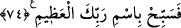

aynı şekilde yaptıkları anlatılmıştır.
İdris (a.s) inzivâya, gece ibadetine ve riyazâta çok devam ettiği için dördüncü kat
semaya yüceltildi. Rûhî yönü cismine üstün geldiğinden bedeni bırakarak meleklere
karıştı, göklerin rûhânîlerine ulaştı ve kudsî âleme yüceltildi. On altı yıl uyumadan, bir
şey yiyip içmeden yaşadı. Şehvet duyguları tamamen giderildiği için hiç evlenmedi.
Riyâzatı çok yaptığı için yalın akıl hâline geldi. Gökler âlemi ekseninin üzerinde
döndüğü yer olan mekânların en yükseğine, güneş göğüne yüceltildi.
Sonra muhabbet ateşi ateşlerin en şiddetlisidir. Cüneyd (k.s.)’un bildirdiğine göre
ateş: “Ey Rabbim! Şayet sana itâat etmeyecek olursam bana benden daha şiddetli bir şey
ile azab eder miydin?” dedi. Allah Teâlâ: “Evet senin üzerine en büyük ateşimi
salardım” buyurdu. Ateş: “Benden daha büyük ateşin var mı ya Rabbi?” dedi. Allah
Teala da: “Evet, o ateş, inanan dostlarımın kalbinde barındırdığım muhabbetimin
ateşidir” buyurdu. Fethu’l-karib adlı eserde böyle kaydedilmiştir.
Sevgilinin muhabbeti âşıklar için ateştir
Müştakların varlığını yakar kül eder.
74. Öyleyse ulu Rabbinin adını tesbih et.
Bu âyet-i kerîmede, “Rabbinin adını tesbih et” buyruldu da “Rabbini tesbih et”
buyrulmadı. Çünkü sebbaha fiili lâzım durumuna getirilmiş ve bunun meful almasına
itibar edilmemiştir. Mânâsı şöyledir. “Rabbinin isminin zikriyle tesbîhi yenile.” Burada,
muzaf olan zikir kelimesi hazfedilmiştir. “İnkarcılar inkâr etse de bunca nimetleri ihsân
eden Rabbinin ismini zikrederek tesbih et” ya da mecaz yoluyla “O’nu zikrederek tesbih
et.” Çünkü bir şeyin ismini anmak, bizzat onu anmaktır.
“Rabbinin zikri”nden maksad, Kur’ân-ı Kerim okumaktır. Âyette geçen azîm kelimesi
ise isim kelimesinin veya Rab kelimesinin sıfatıdır.
İbn Ata (r.h.) demiştir ki: O’nu tesbih et. Şübhesiz ki Allah Teâlâ senin tesbîhine veya
herhangi bir ibâdetine muhtaç olmaktan münezzehtir. Ancak, Allah’ı tenzîh ettikleri
şeylerden kendi nefislerini de temizlemeleri için Cenâb-ı Hak onlara, kendisini tesbih
etmelerini emr ederek onları şereflendirdi.
[223]. Müslim, İstiska 13.
[224]. Buhari, Bedü’l-halk 10; Tirmizi, Cehennem 7; İbn Mace, Zühd 38; Darimi,
Rikak 120; Muvatta, Cehennem 1.